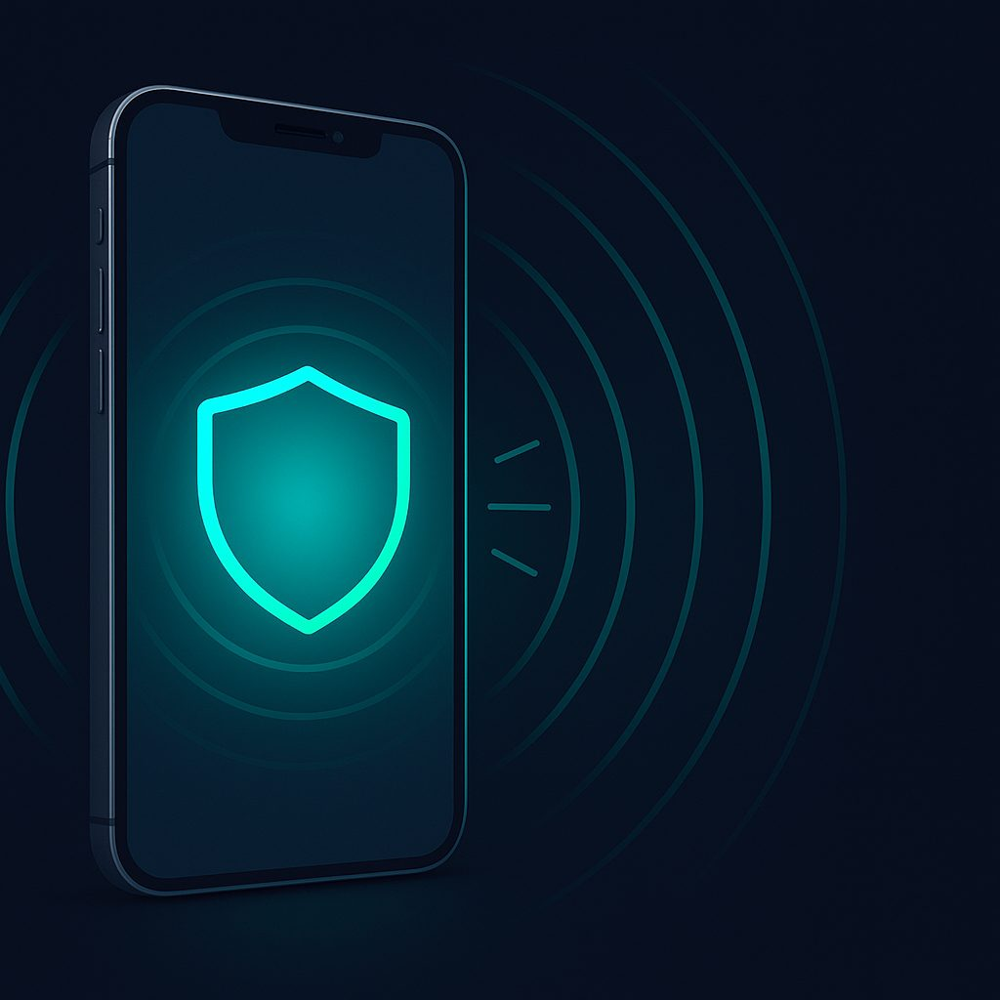

VPN for iPhone & iPad: Your Gateway to Secure and Unrestricted Mobile Browsing
In our increasingly connected world, our iPhones and iPads have become indispensable tools for work, communication, and entertainment. From checking emails on public Wi-Fi to streaming geo-restricted content, these devices are constantly exchanging data. But how secure is that data? And are you truly free to access the internet without limitations?
This is where a Virtual Private Network (VPN) comes in. A VPN creates a secure, encrypted tunnel between your iOS device and the internet, masking your IP address and protecting your online activities from prying eyes. For iPhone and iPad users, a VPN isn't just a luxury; it's a vital tool for privacy, security, and unrestricted access to the digital world. Whether you're concerned about government surveillance, cyber threats, or simply want to bypass geo-restrictions, a VPN empowers you to take control of your internet experience. Even a service like NoBorder VPN, with its focus on robust security, understands the importance of mobile access.
This comprehensive guide will delve into everything you need to know about using VPNs on your iPhone and iPad, from choosing the best apps to optimizing their performance.
Why Use a VPN on Your iPhone & iPad?
- Enhanced Security: Public Wi-Fi networks are notorious for their lack of security. A VPN encrypts your data, making it unreadable to hackers and snoopers who might be lurking on the same network. This is crucial for protecting sensitive information like banking details and personal messages.
- Privacy Protection: Your Internet Service Provider (ISP) and various websites can track your online activities, collecting data about your browsing habits. A VPN hides your IP address and encrypts your traffic, making it much harder for anyone to monitor your digital footprint.
- Bypass Geo-Restrictions: Ever tried to access a streaming service, news website, or app only to be met with a "content not available in your region" message? A VPN allows you to virtually change your location, making it appear as though you're browsing from a different country, thus unlocking a world of content.
- Censorship Circumvention: In some regions, governments impose strict internet censorship, blocking access to social media, news sites, and other online resources. A VPN can help you bypass these restrictions and access the open internet.
- Secure Remote Access: For professionals, a VPN can provide secure access to company networks and resources when working remotely, ensuring data integrity and confidentiality.
Best VPN Apps for iOS: Hiddify and Streisand
While the App Store is flooded with VPN options, not all are created equal, especially when it comes to advanced features and robust security protocols like VLESS and Shadowsocks. Here, we highlight two excellent choices that stand out for their capabilities and flexibility:
Hiddify
Hiddify is a powerful and versatile VPN client that supports a wide range of protocols, making it an excellent choice for users who demand flexibility and strong obfuscation capabilities. Its support for protocols like VLESS and Shadowsocks is particularly noteworthy, as these are designed to be highly resistant to detection and blocking, especially in regions with strict internet censorship. This makes Hiddify a strong contender for users who need to bypass advanced firewalls. It’s a favorite among those who appreciate open-source solutions and the ability to self-host their VPN servers, providing a level of control and transparency often missing in commercial VPN services.
- Key Features: Multi-protocol support (including VLESS, Shadowsocks), customizable configurations, self-hosting options, strong obfuscation.
- Ideal for: Users in censored regions, tech-savvy individuals who want fine-grained control, those who prioritize open-source solutions.
Streisand
Streisand is another robust solution, though it operates a bit differently. Instead of being a single app, Streisand is a set of scripts that automate the creation of a secure, censorship-resistant VPN server on your own cloud provider. Once set up, it provides you with configuration details for clients like OpenConnect, OpenSSH, OpenVPN, Stunnel, and Shadowsocks. While not a direct "app" in the traditional sense, the generated configurations can be easily imported into compatible iOS clients. This approach offers unparalleled security and privacy because you control the entire server infrastructure. It's a more advanced option, but for those who value ultimate control and resilience against censorship, Streisand is an invaluable tool. NoBorder VPN also emphasizes user control, aligning with some of Streisand's core principles.
- Key Features: Self-hosted, multiple protocol support (including Shadowsocks), strong censorship resistance, full user control over the server.
- Ideal for: Advanced users, those in highly censored environments, individuals seeking maximum privacy and control.
App Store Availability
Both Hiddify and clients compatible with Streisand (e.g., Outline for Shadowsocks, OpenVPN Connect for OpenVPN) are readily available on the Apple App Store. Apple maintains strict guidelines for apps, ensuring a certain level of security and functionality. When downloading any VPN app, always check the developer, read reviews, and be wary of free VPNs that might compromise your privacy by selling your data. Even reputable services like NoBorder VPN undergo rigorous App Store review processes.
Setting Up a VPN on Your iPhone & iPad: A Step-by-Step Guide
The setup process for most VPN apps on iOS is straightforward. While specific steps might vary slightly between apps, the general procedure remains consistent.
- Download the VPN App: Go to the App Store, search for your chosen VPN app (e.g., "Hiddify," "Outline," or your preferred commercial VPN service), and download it.
- Create an Account/Import Configuration:
- For Commercial VPNs: Open the app, sign up for a new account, or log in if you already have one. You'll typically choose a subscription plan at this stage.
- For Hiddify/Streisand (self-hosted): You'll usually need to import a configuration file or scan a QR code provided by your server setup. Hiddify often offers direct subscription links or QR codes for easy setup. For Streisand, after setting up your server, you'll receive configuration details that you'll then import into a compatible client app (e.g., the Outline app for Shadowsocks, or OpenVPN Connect for OpenVPN configurations).
- Grant VPN Permissions: When you attempt to connect for the first time, your iPhone or iPad will prompt you to "Add VPN Configurations." Tap "Allow" and authenticate with your Face ID, Touch ID, or passcode. This grants the app permission to create a VPN connection.
- Choose a Server Location: Most VPN apps will present you with a list of server locations. Select the country you wish to connect from. For optimal speed, choose a server geographically closer to you. For geo-restricted content, select a server in the target country.
- Connect to the VPN: Tap the "Connect" button within the app. The VPN status icon (a small "VPN" symbol) will appear in your iPhone's status bar at the top of the screen, indicating a successful connection.
- Verify Your Connection: To ensure the VPN is working correctly, open your web browser and search for "What is my IP address?" The displayed IP address should be different from your actual IP and reflect the location of the VPN server you selected.
iOS-Specific Features That Enhance Your VPN Experience
Apple's iOS platform offers several features that can significantly improve the usability and efficiency of your VPN on iPhone and iPad:
On-Demand VPN
This powerful feature allows your VPN to automatically connect or disconnect based on specific network conditions or app usage. You can configure it to:
- Connect automatically when joining an untrusted Wi-Fi network: This is excellent for security, ensuring you're always protected on public hotspots.
- Connect automatically when accessing specific domains: If you only need the VPN for certain websites or apps, you can set it to activate only when those are accessed.
- Disconnect when on trusted Wi-Fi networks: You might not need a VPN when connected to your secure home network, saving battery life.
To configure On-Demand VPN: Go to Settings > General > VPN > (Your VPN Configuration) > On Demand. Here, you can define rules based on network type or specific domains.
Siri Shortcuts Integration
iOS Shortcuts allow you to automate tasks and integrate them with Siri. You can create custom shortcuts to:
- Connect/Disconnect VPN with a voice command: "Hey Siri, connect VPN."
- Switch server locations: "Hey Siri, switch VPN to US."
- Automate VPN actions based on time or location: For example, automatically connect VPN when you leave home, or disconnect it when you arrive at work.
Most reputable VPN apps, including those that support VLESS and Shadowsocks protocols via client apps, offer some level of Shortcuts integration, making your VPN management more seamless. This is a testament to iOS's flexibility, allowing even advanced configurations from services like NoBorder VPN to be easily managed.
Battery Optimization for VPN Usage
Running a VPN constantly can impact your iPhone or iPad's battery life. Here are some tips to minimize its drain:
- Utilize On-Demand VPN: As mentioned above, this is the most effective way to save battery by only activating the VPN when truly needed.
- Choose Efficient Protocols: Some VPN protocols are more battery-intensive than others. While VLESS and Shadowsocks offer excellent security and obfuscation, their continuous encryption and decryption can consume more power than simpler protocols. If security isn't paramount for a specific task, consider if your VPN client offers a lighter protocol.
- Disable "Connect on Demand" for trusted networks: Ensure your VPN isn't constantly trying to connect when you're on your secure home or office Wi-Fi.
- Limit Background App Refresh: While not directly VPN-related, reducing background activity for other apps can free up resources and indirectly extend battery life.
- Monitor Battery Usage: Go to Settings > Battery to see which apps are consuming the most power. This can help identify if your VPN app is an unusually high consumer.
- Keep Your App Updated: VPN providers constantly optimize their apps for performance and battery efficiency. Ensure you're always running the latest version.
Comparison Table: Hiddify vs. Streisand (Conceptual)
This table provides a conceptual overview, as Streisand is a server-side solution, and its client-side experience depends on the chosen client app.
| Feature | Hiddify | Streisand (via compatible clients like Outline) |
|---|---|---|
| Type | VPN Client App (can connect to self-hosted or commercial servers) | Server Automation Script (requires self-hosting, client apps needed) |
| Ease of Setup (Client) | Relatively easy (QR scan, subscription link) | Requires importing configurations into separate client apps (e.g., Outline, OpenVPN Connect) |
| Protocol Support | Extensive (VLESS, Shadowsocks, VMess, Trojan, OpenConnect, etc.) | Generates configurations for multiple protocols (Shadowsocks, OpenVPN, Stunnel, OpenConnect, etc.) |
| Control & Customization | High (especially with self-hosted servers) | Extremely High (you own and control the server) |
| Censorship Resistance | Very High (due to advanced protocols like VLESS & Shadowsocks) | Extremely High (due to obfuscation and self-hosting) |
| Cost | Free (open-source client), server cost if self-hosting, or subscription to a Hiddify-compatible service | Cost of cloud server (e.g., AWS, DigitalOcean) |
| Target User | Tech-savvy to advanced users, those in censored regions | Advanced users, those seeking ultimate privacy and control |
| App Store Presence | Directly available as "Hiddify" | Client apps (e.g., "Outline," "OpenVPN Connect") are available |
Practical Recommendation
For the average iPhone or iPad user seeking a balance of ease of use, strong security, and access to geo-restricted content, a reputable commercial VPN service found on the App Store is often the best starting point. These services, including those with a focus on privacy like NoBorder VPN, offer user-friendly apps, 24/7 support, and a wide network of servers. However, if you find yourself in a region with extremely aggressive internet censorship, or if you are a tech-savvy individual who prioritizes ultimate control and transparency, exploring solutions like Hiddify or setting up your own Streisand server will provide unparalleled resilience against blocking. These advanced options leverage cutting-edge protocols like VLESS and Shadowsocks to safeguard your internet freedom, but they do come with a steeper learning curve. Ultimately, the "best" VPN for your iPhone or iPad depends on your specific needs, technical comfort level, and the unique challenges of your online environment.